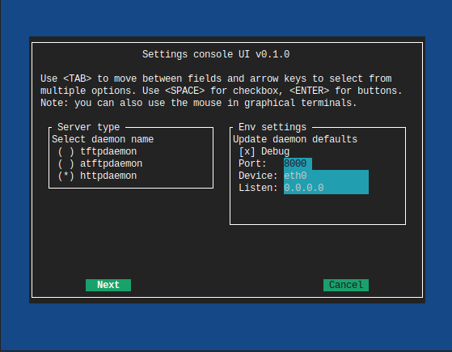
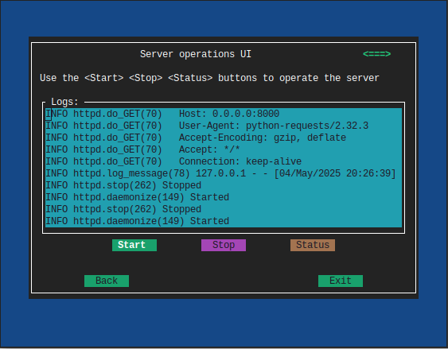
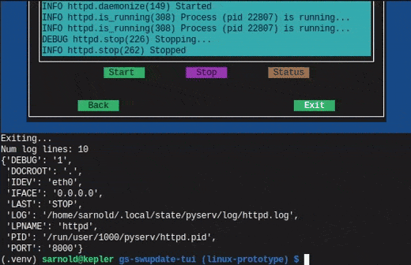

Pyserv - A Collection of Simple Servers¶


This is a growing collection of threaded Python server bits, including custom HTTP server and WSGI classes, along with corresponding console entry points and some daemon scripts. The latest addition includes an async version of the original tftpy-based daemon script.
Note
Okay, a tftpy server class is not technically threaded, but it
does set threading.event and handles multiple client sessions
via a select loop.
These tools exist mainly to handle simple requests for local files in a small-ish engineering/development environment. Choose daemon or console script, depending on workflow needs.
Important
This is not intended for Internet/intranet use and has absolutely no security. This is intended mainly for development support on a local subnet, eg, a local WIFI network you control. You have been warned.
Quick Start¶
The officially supported minimum Python version is now 3.9.
The original reason this version of the “project” exists was serving OTA
firmware images to a small device over wifi, eg, an Android device or
similar that requires an HTTP URL for firmware img/zip files. If that
is what you need, then make sure the FW update files you want are in
a directory in your virtual environment and run the serv command
from that directory. The simple way to do that is:
follow the steps below to create a virtual env (either venv or tox)
connect your dev host to the same wifi network as the device
copy your FW files into the source directory, then start the server
In another terminal, run your update command and provide a URL like this:
http://<dev_host_wifi_IP>:PORT/fw_update.img
where PORT is the port used below and fw_update.img is the name
of your OTA update file.
Daemons and Console Entry Points¶
Pyserv contains modules with some backported features and a fix for broken OTA clients. It provides multiple console commands for different protocols, and three daemon wrappers for http and tftp.
console commands with simple arguments to run, well, from the console, or for running via Procfile with something like Honcho
daemon scripts to run in the background for workflows that need a simple HTTP server or TFTP server
Console command options¶
HTTP - the
servconsole commandWSGI - the
wsgiconsole commandTFTP - the
tftpdconsole command
The above standard Python console entry points all have these minimal/default “features” with no arguments:
the document/server root is always the current directory
HTTP: default port is
8080and the server listens on all interfacesWSGI: default port is
8000, default app is builtin demo app, and the server listens on localhostTFTP: default port is
9069and the server listens on localhost
the only allowed args are either port, or port and interface (or app_name and port for WSGI)
Note
All of the above are configurable via environment variables
defined in the settings module (with the above defaults).
The httpdaemon, atftpdaemon, and tftpdaemon commands are
stand-alone Python daemon scripts with the same core server code, as
well as a default user configuration adjustable via environment
variables, and the following “extra” features:
allowed command-line args are
start | stop | restart | statusdefault port is
8080or9069and listen interface is127.0.0.1default XDG user paths are set for pid and log files
environment values are checked first; if not set, fallback to defaults
logging using daemon package logger config
Note
The XDG runtime path may not exist in a console environment; if so, the fallback is XDG user cache path.
Sample environment display with tox overrides, ie, inside a Tox venv:
Python version: 3.13.3 (main, Jun 2 2025, 19:32:29) [GCC 15.1.0]
-------------------------------------------------------------------------------
pyserv 1.8.4
Pyserv default settings for server and daemon modes.
Default user vars:
log_dir: /home/user/.local/state/pyserv/log
pid_dir: /run/user/1001/pyserv
work_dir: /home/user/src/python-servers
Current environment values:
DEBUG: 1
PORT: 8000
IDEV: lo
IFACE: 127.0.0.1
LPNAME: httpd
LOG: /home/user/src/python-servers/.tox/dev/log/httpd.log
PID: /home/user/src/python-servers/.tox/dev/tmp/httpd.pid
DOCROOT: /home/user/src/python-servers
SOCK_TIMEOUT: 5
-------------------------------------------------------------------------------
Use, ie, export any of the variables under “Current environment values” to set your own custom environment settings.
Important
The os.getenv defaults are only applied if the corresponding
environment variable is not set. Previously it was possible
to set the above environment vars to an empty value but this
is no longer the case. From this release onward, empty values
are ignored and the default value is applied instead.
Daemon usage¶
Once installed in a virtual environment, check the help output:
$ httpdaemon -h
usage: httpdaemon [-h] [--version] {start,stop,restart,status}
Threaded HTTP server daemon
positional arguments:
{start,stop,restart,status}
optional arguments:
-h, --help show this help message and exit
--version show program's version number and exit
One small wrinkle
the daemon scripts are “traditional” forking daemons and thus will not work on Windows, however, the console command variants should Just Work (if not, please file an issue).
New
experimental tftp server daemon based on tftpy
even more experimental async tftp server daemon based on py3tftp
run
tox -e tftpto create a virtual env and view defaultsrun
tox -e tftpdto create a virtual env with capabilities for low ports, eg, port69ENV value SOCK_TIMEOUT is specific to tftp client/server connections
script args and most ENV values are otherwise the same as
httpdaemon
Async tftp usage¶
Run a simple test of the async daemon with tox:
$ LPNAME=atftpd tox -e tftpd
tftpd: install_deps> python -I -m pip install logging_tree 'pip>=23.1' 'setuptools_scm[toml]' .
tftpd: commands_pre[0]> bash -c 'dd if=/dev/zero of=$DOCROOT/$TST_FILE bs=1M count=40'
40+0 records in
40+0 records out
41943040 bytes (42 MB, 40 MiB) copied, 0.0127168 s, 3.3 GB/s
tftpd: commands_pre[1]> bash -c 'sudo setcap cap_net_bind_service+ep /home/user/src/pyserv/.tox/tftpd/bin/python'
tftpd: commands_pre[2]> bash -c 'sudo setcap cap_net_bind_service+ep /home/user/src/pyserv/.tox/tftpd/bin/python3'
tftpd: commands[0]> python -c 'from pyserv.settings import show_uservars; show_uservars()'
Python version: 3.12.7 (main, Oct 19 2024, 22:38:25) [GCC 14.2.1 20240921]
-------------------------------------------------------------------------------
pyserv 1.6.2.dev8+g684c689
Pyserv default settings for server and daemon modes.
Default user vars:
log_dir: /home/user/.local/state/pyserv/log
pid_dir: /run/user/1000/pyserv
work_dir: /home/user/src/pyserv
Current environment values:
DEBUG: 0
PORT: 69
IFACE: 0.0.0.0
LPNAME: atftpd
LOG: /home/user/src/pyserv/.tox/tftpd/log/atftpd.log
PID: /home/user/src/pyserv/.tox/tftpd/tmp/atftpd.pid
DOCROOT: tests/data
SOCK_TIMEOUT: 5
-------------------------------------------------------------------------------
tftpd: commands[1]> atftpdaemon -h
usage: atftpdaemon [-h] [--version] [--host HOST] [-p PORT]
[--ack-timeout TIMEOUT] [--conn-timeout CONN_TIMEOUT] [-v]
[-q]
{start,stop,restart,status}
Async TFTP server daemon
positional arguments:
{start,stop,restart,status}
options:
-h, --help show this help message and exit
--version show program's version number and exit
--host HOST IP of the interface the server will listen on.
Default: 0.0.0.0 (default: )
-p PORT, --port PORT Port the server will listen on. Default: 9069. TFTP
standard-compliant port: 69 - requires additional
privileges. (default: 9069)
--ack-timeout TIMEOUT
Timeout for each ACK of the lock-step. Default: 0.5.
(default: 0.5)
--conn-timeout CONN_TIMEOUT
Timeout before the server gives up on a transfer and
closes the connection. Default: 3. (default: 5.0)
-v, --verbose Enable debug-level logging. (default: False)
-q, --quiet Inhibit extra console output. (default: False)
tftpd: commands[2]> atftpdaemon start
LOG: /home/user/src/pyserv/.tox/tftpd/log/atftpd.log
PID: /home/user/src/pyserv/.tox/tftpd/tmp/atftpd.pid
DOCROOT: tests/data
tftpd: commands[3]> bash -c 'sleep 2'
tftpd: commands[4]> curl --tftp-blksize 8192 --output tests/testbin.swu tftp://0.0.0.0:69/testbin.swu
% Total % Received % Xferd Average Speed Time Time Time Current
Dload Upload Total Spent Left Speed
100 40.0M 100 40.0M 0 0 275M 0 --:--:-- --:--:-- --:--:-- 275M
100 40.0M 100 40.0M 0 0 275M 0 --:--:-- --:--:-- --:--:-- 275M
tftpd: commands[5]> bash -c 'sleep 1'
tftpd: commands[6]> tail -n 5 /home/user/src/pyserv/.tox/tftpd/log/atftpd.log
2024-12-24 01:48:12 UTC INFO atftpd.daemonize(149) Started
2024-12-24 01:48:12 UTC INFO atftpd.connection_made(393) Listening...
2024-12-24 01:48:14 UTC INFO atftpd.__init__(273) Initiating RRQProtocol with ('127.0.0.1', 56554)
2024-12-24 01:48:14 UTC INFO atftpd.connection_lost(123) Connection to 127.0.0.1:56554 terminated
tftpd: commands[7]> cmp tests/data/testbin.swu tests/testbin.swu
tftpd: commands[8]> ls -l tests/data/testbin.swu tests/testbin.swu
-rw-r--r-- 1 user user 41943040 Dec 23 17:48 tests/data/testbin.swu
-rw-r--r-- 1 user user 41943040 Dec 23 17:48 tests/testbin.swu
tftpd: commands[9]> bash -c 'rm -f tests/data/testbin.swu tests/testbin.swu'
tftpd: commands_post[0]> atftpdaemon stop
LOG: /home/user/src/pyserv/.tox/tftpd/log/atftpd.log
PID: /home/user/src/pyserv/.tox/tftpd/tmp/atftpd.pid
DOCROOT: tests/data
tftpd: OK (39.19=setup[35.53]+cmd[0.02,0.01,0.01,0.07,0.09,0.10,2.00,0.15,1.00,0.01,0.02,0.00,0.01,0.18] seconds)
congratulations :) (39.24 seconds)
Experimental server TUI¶
The new daemontui script uses the picotui Text User Interface (TUI)
widget library. Both keyboard and mouse navigation are supported (the latter
only if the console itself supports mouse input). The TUI script provides a
convenient way to run the daemon scripts with the following features:
settings console with default (pyserv) options for each server type
select the desired daemon for defaults, then edit values as needed
operations console with control buttons and log display
navigation buttons will stop the running server
eg, select the Back button to return to settings
The current (static) UI displays are shown in more detail below.
Settings console¶

Important
The default network settings use non-privileged ports;
selecting a lower-numbered port requires elevated privileges
via something like sudo or setcap.
Operations console¶

See it in action:

Note
The daemontui.py script is not currently installed with the
package. To run the script, create a Tox dev environment as
shown below, then activate the environment and use the command
python scripts/daemontui.py.
Install with pip¶
This refactored fork of pyserv is not published on PyPI, thus use one of the following commands to install the latest pyserv in a Python virtual environment on any platform.
From source:
$ python3 -m venv env
$ source env/bin/activate
$ pip install git+https://github.com/sarnold/pyserv.git
$ serv 8000 # optionally add interface, eg, 10.0.0.2
The output should be:
INFO:root:Starting HTTP SERVER at PORT :8000
The alternative to python venv is the Tox test driver. If you have it installed already, clone this repository and try the following commands from the pyserv source directory.
To install in dev mode:
$ tox -e dev
To run tests using default system Python:
$ tox -e py
To run pylint:
$ tox -e lint
Note
After installing in dev mode, use the environment created by
Tox just like any other Python virtual environment. The dev
install mode of Pip allows you to edit the code and run it
again while inside the virtual environment. By default Tox
environments are created under .tox/ and named after the
env argument (eg, py).
To install the latest release, eg with your own tox.ini file in
another project, use something like this:
$ pip install https://github.com/sarnold/pyserv/releases/download/1.2.4/pyserv-1.2.4-py3-none-any.whl
If you have a requirements.txt file, you can add something like this:
pyserv @ https://github.com/sarnold/pyserv/releases/download/1.2.4/pyserv-1.2.4.tar.gz
Note the newest pip versions may no longer work using -f with just
the GH “releases” path to get the latest release from Github.
TFTP client example¶
In the repo, use the tox env and start the server:
$ tox -e py
$ source .tox/py/bin/activate
(py) $ tftpd
INFO:tftpy.TftpServer:Server requested on ip 127.0.0.1, port 9069
INFO:tftpy.TftpServer:Starting receive loop...
Open a new terminal and try out downloading a file with curl using
default options; note this will send the file directly to stdout:
$ curl tftp://127.0.0.1:9069/requirements.txt
# daemon requirements, useful for tox/pip
daemonizer @ git+https://github.com/sarnold/python-daemonizer.git@0.3.5#5f6bc3c80a90344b2c8e4cc24ed0b8c098a7af50; platform_system!="Windows"
appdirs
tftpy
On the server side, ie, inside your virtual environment, you should see:
INFO:tftpy.TftpStates:Setting tidport to 51009
INFO:tftpy.TftpStates:Dropping unsupported option 'timeout'
INFO:tftpy.TftpStates:requested file is in the server root - good
INFO:tftpy.TftpStates:Opening file /home/user/src/pyserv/requirements.txt for reading
INFO:tftpy.TftpServer:Currently handling these sessions:
INFO:tftpy.TftpServer: 127.0.0.1:51009 <tftpy.TftpStates.TftpStateExpectACK object at 0xffff87d5d1d0>
INFO:tftpy.TftpStates:Reached EOF on file requirements.txt
INFO:tftpy.TftpStates:Received ACK to final DAT, we're done.
INFO:tftpy.TftpServer:Successful transfer.
INFO:tftpy.TftpServer:
INFO:tftpy.TftpServer:Session 127.0.0.1:51009 complete
INFO:tftpy.TftpServer:Transferred 257 bytes in 0.00 seconds
INFO:tftpy.TftpServer:Average rate: 1243.74 kbps
INFO:tftpy.TftpServer:0.00 bytes in resent data
INFO:tftpy.TftpServer:0 duplicate packets
If no port is provided the server attempts to run on port 9069.
If the given port (or the default port 9069) is already in use, you will need to pass a different port number, eg, 9169.
For larger/binary files, use -O to save the file in the current directory,
and for better performance with large files, use curl’s --tftp-blksize arg
and set a larger size, eg, 8192.
GET request example¶
In the repo, use the tox env and start the server:
$ tox -e py
$ source .tox/py/bin/activate
(py) $ serv
INFO:root:Starting HTTP SERVER at :8080
Open a new terminal and try out sending a GET request:
$ python
>>> import requests
>>> URL = 'http://0.0.0.0:8080'
>>> r = requests.get(URL)
>>> print(r.text)
<!DOCTYPE HTML PUBLIC "-//W3C//DTD HTML 4.01//EN" "http://www.w3.org/TR/html4/strict.dtd">
On the server side, ie, inside your virtual environment, you should see:
INFO:root:Starting HTTP SERVER at :8080
INFO:root:Path in: /
INFO:root:Path out: /
INFO:root:Headers:
INFO:root: Host: 0.0.0.0:8080
INFO:root: User-Agent: python-requests/2.25.1
INFO:root: Accept-Encoding: gzip, deflate
INFO:root: Accept: */*
INFO:root: Connection: keep-alive
INFO:root:127.0.0.1 - - [13/Jul/2022 20:52:22] "GET / HTTP/1.1" 200 -
If no port is provided the server attempts to run on port 8080.
If the given port (or the default port 8080) is already in use, you will need to pass a different port number, eg, 8088.
Motivation:
Small device firmware with non-compliant HTTP client implementations.
Original project from gist: https://pypi.org/project/pyserv/
Original gist: https://gist.github.com/mdonkers/63e115cc0c79b4f6b8b3a6b797e485c7
Pre-commit¶
This repo is pre-commit enabled for python/rst source and file-type linting. The checks run automatically on commit and will fail the commit (if not clean) and perform simple file corrections. For example, if the mypy check fails on commit, you must first fix any fatal errors for the commit to succeed. That said, pre-commit does nothing if you don’t install it first (both the program itself and the hooks in your local repository copy).
You will need to install pre-commit before contributing any changes; installing it using your system’s package manager is recommended, otherwise install with pip into your usual virtual environment using something like:
$ sudo emerge pre-commit --or--
$ pip install pre-commit
then install it into the repo you just cloned:
$ git clone https://github.com/sarnold/pyserv
$ cd pyserv/
$ pre-commit install
It’s usually a good idea to update the hooks to the latest version:
$ pre-commit autoupdate
Most (but not all) of the pre-commit checks will make corrections for you, however, some will only report errors, so these you will need to correct manually.
Automatic-fix checks include ffffff, isort, autoflake, and miscellaneous
file fixers. If any of these fail, you can review the changes with
git diff and just add them to your commit and continue.
If any of the mypy, bandit, or rst source checks fail, you will get a report, and you must fix any errors before you can continue adding/committing.
To see a “replay” of any rst check errors, run:
$ pre-commit run rst-backticks -a
$ pre-commit run rst-directive-colons -a
$ pre-commit run rst-inline-touching-normal -a
To run all pre-commit checks manually, try:
$ pre-commit run -a
SBOM and license info¶
This project is now compliant with the REUSE Specification Version 3.3, so the
corresponding license information for all files can be found in the REUSE.toml
configuration file with license text(s) in the LICENSES/ folder.
Related metadata can be (re)generated with the following tools and command examples.
reuse-tool - REUSE compliance linting and sdist (source files) SBOM generation
sbom4python - generate SBOM with full dependency chain
Commands¶
Use tox to create the environment and run the lint command:
$ tox -e reuse # --or--
$ tox -e reuse -- spdx > sbom.txt # generate sdist files sbom
Note you can pass any of the other reuse commands after the -- above.
Use the above environment to generate the full SBOM in text format:
$ source .tox/reuse/bin/activate
$ sbom4python --system --use-pip -o <file_name>.txt
Be patient; the last command above may take several minutes. See the doc links above for more detailed information on the tools and specifications.